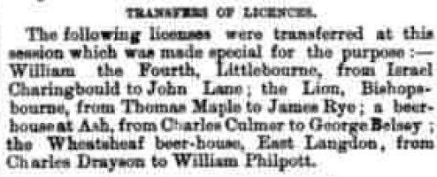
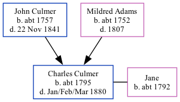

Charles Culmer c1795 - 1880
[ Home ] | [ Calendar ] | [ Surnames Index ] | [ Family History ]A gardener and the child of John Culmer (a laborer) and Mildred Adams, Charles Culmer, the fifth times great-uncle of Nigel Horne, was born in Stourmouth, Kent, England c. 17951,2,3,4,5 and baptized there on Nov 8, 1795. He was married to Jane.
Charles spent all of his life in Kent, England. Throughout his life, he lived in several places around the county: at Lower Street in Stourmouth on Jun 6, 18416; at his birthplace in 18512 (the same place as his father had been living on Jun 6, 1841); at Lower Street in Stourmouth on Apr 7, 18617; and in Ash, Kent, England in 18714.
He died in Jan/feb/mar 1880 in Eastry, Kent5.
Parents
- John was born c. 1757
- Mildred was born c. 1752
Citations
- 1841 England Census Online publication - Provo, UT, USA: The Generations Network, Inc., 2006.Original data - Census Returns of England and Wales, 1841. Kew, Surrey, England: The National Archives of the UK (TNA): Public Record Office (PRO), 1841. Data imaged from the National
- 1851 England Census Online publication - Provo, UT, USA: The Generations Network, Inc., 2005.Original data - Census Returns of England and Wales, 1851. Kew, Surrey, England: The National Archives of the UK (TNA): Public Record Office (PRO), 1851. Data imaged from the National
- 1861 England Census Online publication - Provo, UT, USA: The Generations Network, Inc., 2005.Original data - Census Returns of England and Wales, 1861. Kew, Surrey, England: The National Archives of the UK (TNA): Public Record Office (PRO), 1861. Data imaged from the National
- 1871 England Census Online publication - Provo, UT, USA: The Generations Network, Inc., 2004.Original data - Census Returns of England and Wales, 1871. Kew, Surrey, England: The National Archives of the UK (TNA): Public Record Office (PRO), 1871. Data imaged from the National
- England & Wales, FreeBMD Death Index: 1837-1915 Online publication - Provo, UT, USA: The Generations Network, Inc., 2006.Original data - General Register Office. England and Wales Civil Registration Indexes. London, England: General Register Office. © Crown copyright. Published by permission of the Cont
- 1841 England, Wales & Scotland Census - Findmypast (was age 45)
- 1861 England, Wales & Scotland Census - Findmypast (was age 64 and the head of the household)
Media
Dover Express - 14 Nov 1873

1841 England, Wales & Scotland Census - GBC/1841/0013980975
1861 England, Wales & Scotland Census - GBC/1861/0003565799
Family Tree
Generated by Ged2Site. Last updated on Jul 20, 2025